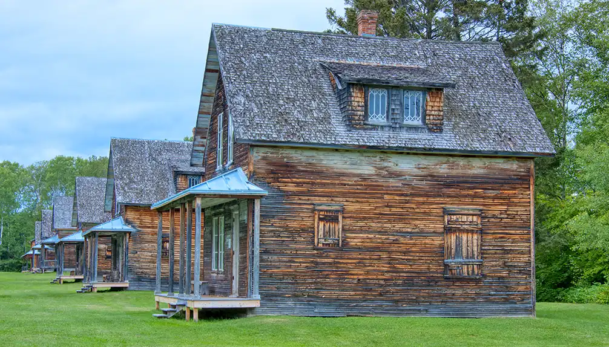
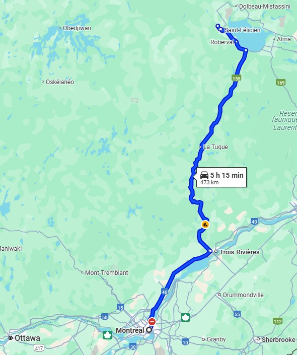

Un village plein d’histoires
Plongez dans l’histoire fascinante de ce lieu unique, niché au cœur de la forêt québécoise.
Accès illimité à tous nos services pour seulement 20 $ par an.
Devenez membre !Plongez dans l’histoire fascinante de ce lieu unique, niché au cœur de la forêt québécoise.
Découvrez cet animal discret et mystérieux qui peuple nos forêts.
Situé à seulement 6 heures de Montréal et 30 minutes de Chicoutimi.
"Une expérience inoubliable en pleine nature ! Les animaux sont en liberté et l’ambiance est magique."
- Marie D.
"Parfait pour une sortie en famille, les enfants adorent !"
- Jean L.